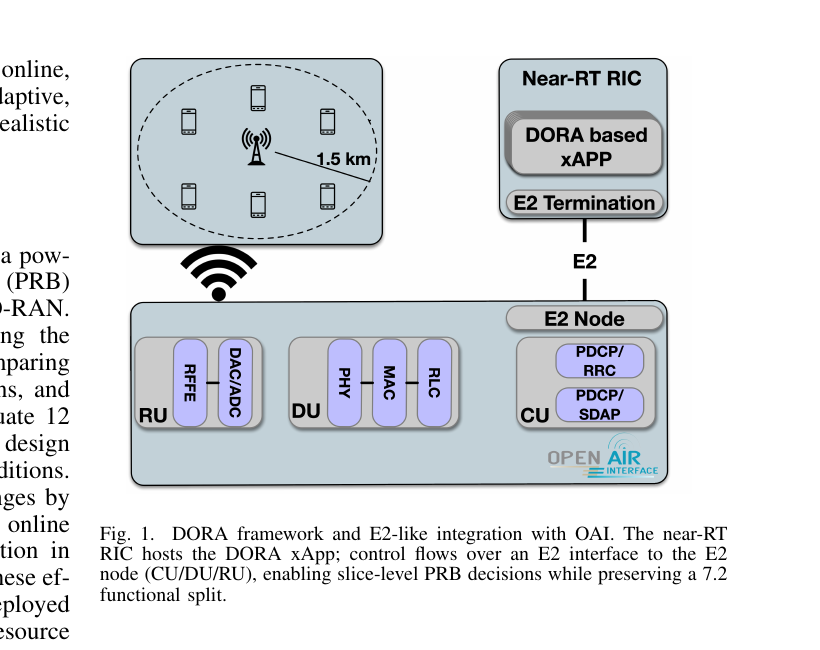
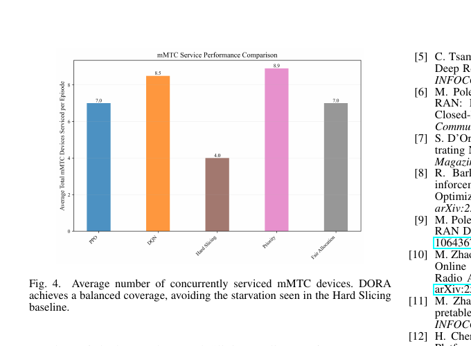

DORA:
make slice allocation adaptive.
DORA is a dynamic O-RAN resource-allocation demonstration in which a PPO agent assigns 106 downlink PRBs across URLLC, eMBB, and mMTC slices as traffic demand and channel quality change.
Give the RAN a changing workload.
Move the slice priorities and traffic load, then watch the xApp redistribute PRBs while the dashboard tracks URLLC latency, eMBB throughput, and the number of mMTC devices served.
What the demo shows
DORA uses observed demand and pathloss instead of a fixed 40/40/20 split, with deterministic round-robin scheduling inside each slice.
In the reported 400 ms URLLC-SLA comparison, DORA’s PPO policy follows the strongest hard-slicing baseline closely while keeping the allocation flexible.
DORA avoids the severe mMTC starvation seen with hard slicing while remaining competitive on eMBB throughput. No policy dominates every slice, so the demo makes the tradeoff visible.


Figures are cropped from the submitted paper to show the system architecture and reported result.
Back to demos ↗